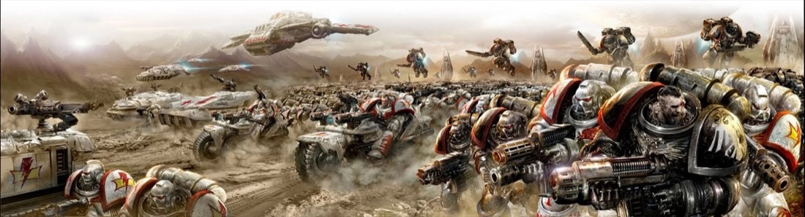

White Scars
| White Scars V Legion · Star Hunters · Horde of Jaghatai | |
|---|---|
Badge of the White Scars: the lightning bolt Artwork © Games Workshop | |
| Founding | First Founding, c. 700.M30[a]; re-formed as a Chapter in the Second Founding |
| Legion number | V |
| Primarch | Jaghatai Khan (the Great Khan, the Khagan; missing since c. 084.M31) |
| Chapter leader | The Great Khan: Jubal Khan |
| Homeworld | Chogoris (Mundus Planus), Yasan Sector, Ultima Segmentum |
| Fortress | Quan Zhou, in the Khum Karta mountains |
| Allegiance | Loyalist, Imperium of Mankind |
| Colours | White and red |
| Battle cry | "For the Emperor and the Khan!" |
| Organisation | Ten brotherhoods, each led by a Khan |
| Successor Chapters | Astral Bears, Dark Hunters, Destroyers, Iron Talons, Jade Scorpions, Mantis Warriors, Marauders, Rampagers, Solar Hawks, Storm Lords, Storm Reapers, and others of disputed descent |
| Notable battles | |
| Ullanor; the Chondax Campaign; Siege of Terra; the Yasan Campaign; Third War for Armageddon; the War for Chogoris | |
| Notable members | |
| Jaghatai Khan, Qin Xa, Hibou Khan, Shiban Khan, Kyublai Khan, Jubal Khan, Kor'sarro Khan, Barutai Khan | |
The White Scars, called the Vth Legion in the age of the Great Crusade and the Star Hunters before their primarch was found, are one of the original Space Marine Legions and a loyalist Space Marine Chapter of the Adeptus Astartes. They are the Imperium's acknowledged masters of the lightning strike: fast columns of bikes, jetbikes, skimmers and gunships that appear without warning, break a foe's weakest point and are gone before an answer can be organised. Their warriors take their name from the ritual scar each bears on the face and their culture from the nomad tribes of their homeworld, Chogoris.[1]
The Legion's Primarch was Jaghatai Khan, the Khagan or Khan of Khans, who had united the steppe tribes of Chogoris before the Emperor of Mankind arrived. Through the Great Crusade the White Scars ranged far beyond the frontier. In the Horus Heresy they refused to be drawn into the wars of the Traitors, fought their way to Terra and took part in the Siege of Terra. The Khan vanished in pursuit of the Drukhari in the years after the Great Scouring, and the White Scars hold to the belief that he hunts still and will one day return.[2]
After the Second Founding the White Scars were divided under the Codex Astartes and gave rise to a number of Successor Chapters, yet the parent Chapter kept its home on Chogoris, its brotherhoods and its customs. In the Era Indomitus it has survived the attack of the Red Corsairs on the Yasan Sector and the near death of its Great Khan, and it has been reinforced by Primaris Space Marines of the Indomitus Crusade.[3]
History
[edit]Origins as the Vth Legion
[edit]The Vth Legion was raised during the last years of the Unification Wars, when the Emperor's first Legions were recruited from the warriors of Terra. Its earliest recruits came in large part from the technomadic clans of the Thulean Basin, who had survived the Age of Strife in mechanised crawlers on the frozen salt flats of the north, and later from every region of Terra. In the wars of Unification the Vth was given the lonely task of scouting. Small cadres, sometimes a dozen warriors, went ahead of the main armies to find the strongholds of Terra's warlords, test their defences and leave them weakened. Few of these deeds were recorded, and the Legion won a name for independence rather than renown.[2]
When the Great Crusade began in 798.M30, the Legion was broken into a hundred Pioneer Companies and sent out along the strongest currents of the Warp to find lost human worlds and map alien realms. For more than fifty years, until c. 865.M30, each company fought alone, so far apart that they lost all sense of being one Legion. It was during this period that the Pioneer Company of Captain Kornelius Dure surveyed the mining world of Cthonia in c. 800.M30[a] and reported it to be a nest of serpents. Horus, who would later claim Cthonia as his homeworld, remembered the report with amusement and favoured the Vth Legion's pioneers ever after. The Legion lived by one creed, that each new day was a victory.[2]
Jaghatai Khan and the Blooding
[edit]
The Legion's missing primarch was found on Chogoris, a feudal world in the Yasan Sector then known to the Imperium by the cold name Mundus Planus. His gestation capsule had fallen on the steppe as an infant, and the khan of the Talskar tribe, Ong Khan, adopted him. When rivals killed his foster father, the young Jaghatai avenged him by destroying the Kurayed tribe in a single night. He was elected khan, subdued each tribe in turn on the choice of submission or death, mixed their warriors into new units so that loyalty would follow him instead of old blood feuds, and was acclaimed Khagan. He then broke the cult-ridden realm that had ruled the western plains and overthrew the city-dwelling Palatine empire of the east. Chogorian tradition says the steppe ran red for years.[2]
The Emperor reached Chogoris in c. 865.M30, in a fleet that included Horus and the XVIth Legion, only a few solar months after the Khan's conquest was complete. The Khan weighed the offer he was given, a place in the Emperor's Imperium or defeat, as one who had made the same offer to others, and he knelt. Records written by the Khan himself show a more calculating motive than the accounts of the Remembrancers: he valued the Emperor's goal of unity and understood the cost of refusing it.[2] Only Rogal Dorn and Roboute Guilliman are recorded as objecting to the brief instruction he received about the Imperium's workings.
The Khan called the Pioneer Companies back to Chogoris. It took nearly a solar decade, until c. 875.M30,[a] for most of them to arrive, and they came as strangers, each with its own heraldry. He bound them together with Chogorian ritual. On the open plain more than fifty thousand Legionaries cut a mark into their own faces, each choosing the pattern and depth, and each took a name. The rite, known as the Blooding or the Ascension, gave the Legion its new title. The Vth Legion became the White Scars, and the Star Hunters ceased to exist.[2] Chogorians were then recruited in numbers, and the Legion took on the Khan's tribal customs, though many Terran veterans remained.
The Great Crusade
[edit]The White Scars fought across the Ultima Segmentum and beyond in campaigns that the Remembrancers largely neglected. They took part in the destruction of the Ork empire of WAAAGH! Mashogg alongside the Space Wolves and the Iron Warriors; in the Compliance of the Araaki Spiral, whose people built fortresses in narrow passes; and in the Compliance of Molech in 869.M30, led by the Emperor himself. At the Council of Nikaea in 001.M31 the Khan argued that psykers were a necessary danger, and Imperial records say that he drew up many of the rules for the Legions' Librarius, though his name does not appear in the official texts. He had no illusions about the Warp, and the Chogorians, who never lost belief in spirits, understood better than most why the Emperor feared it.[2]
The Legion was at the Triumph of Ullanor in 999.M30–000.M31, where Horus was named Warmaster. A long war against an Ork realm in the Chondax System followed, and it was still being fought in 007.M31.[4]
Horus Heresy
[edit]News of Horus's revolt reached the Khan in the closing stages of the Chondax Campaign as fragments of astropathic signals, some of them months old. The Alpha Legion was sent to pin down the Space Wolves and the White Scars piecemeal, and the Khan had to choose between answering Leman Russ and obeying the order of Rogal Dorn to return to Terra. He chose Terra. The Legion lost a fifth of its strength in four years of raiding, 007–011.M31, against the Traitors' supply lines, and was trapped by the Ruinstorm, the storm in the Warp raised by the Word Bearers. Some records name the stratagem that freed them. At the ruined Kalium Gate the Khan's Keshig Master, Qin Xa, wore the Khagan's armour and drew the Death Guard and Emperor's Children task force under Lord Commander Eidolon onto himself. He died of his wounds aboard the flagship Lance of Heaven while the Khan, free of pursuit, went in search of the Navigator Pieter Achelieux and a passage through the storm.[5]
On Terra, which they reached in c. 013.M31,[a] the White Scars joined the Imperial Fists and the Blood Angels, the only loyalist Legions at the Throneworld before the siege began. The Khan did not hold a wall. He took the mobile reserve, the White Scars and the Terran armoured divisions, and in 014.M31 raided the Lion's Gate Spaceport at dawn, retaking it from a garrison that did not expect an attack. The defence lasers were turned on the Traitors' own landing craft, and the flow of men and machines to the Palace was halved in a single day. A later attempt on the Eternity Wall Spaceport was beaten back.[5] The latest Imperial chronicles of the siege record that the Khan was gravely wounded in the final fighting and carried from the field near death, an account that supersedes the earlier version in which his Legion emerged from the siege untouched in its leadership.[5]
Great Scouring and the disappearance of the Khan
[edit]The Khan spent the years after the Heresy rebuilding in the Yasan Sector, which had been raided without mercy by Drukhari while the Imperium was at war with itself. Thousands of Chogorians were taken through the Webway as slaves. The campaign that followed was a vengeance. In c. 084.M31, at Corusil V on the edge of the Maelstrom, the Khan and his 1st Brotherhood fought several Kabals. The Khan followed an Archon through a portal into the Webway and was not seen again.[2] Imperial records state only that he vanished. The Chapter's own accounts say that he is hunting still.
Chapter era
[edit]The White Scars survived the Second Founding of 021.M31 with their identity intact, dividing into several Chapters under the Codex Astartes while the parent Chapter retained its home. Its history is a long list of hunts and mobile campaigns. In the Time of Two Emperors, when the Imperium was divided in the Nova Terra Interregnum, the Chapter led the war against Orks in the Scorched System. Its brotherhoods fought in the Sabbat Worlds, the Macharian Crusade and the wars of the Fourth Quadrant.[6] A series of misfortunes known as the Cursed Year, in which three successive Khans died on their first campaigns, led the Stormseers to recall the Chapter to Chogoris and to demand a trial for every candidate. Only Jubal Khan, in the Chapter's latest accounts, survived such an ordeal and was made Great Khan.[6]
In 943.M41 Great Khan Kyublai Khan set out after a Drukhari raid on Chogoris and did not return; Jubal Khan was installed in his place and proclaimed a Great Hunt for the Khan's killers. Kor'sarro Khan, the Master of the Hunt, spent much of that war tracking the Drukhari warlord known as the Shatterling Prince. Another hunt followed the Daemon Prince Kernax Voldorius, an Alpha Legion warlord, across ten years of campaigns that ended in 871.M41.[6] Several brotherhoods fought at the Third War for Armageddon in 998.M41, where they were deployed to the frozen Deadlands. At the Fall of Cadia the brotherhood of Khajog Khan used the moors around the Cadian Gate as a field for hit-and-run raids until it was ordered back to Chogoris.[6]
The Era Indomitus
[edit]
Shortly before the Great Rift opened, the Red Corsairs of Huron Blackheart emerged from the Maelstrom against the Yasan Sector in three prongs. Gartuli and Thaxis fell. With the Great Khan and much of the Chapter abroad, Barutai Khan, Captain of the 2nd Brotherhood, took command at Quan Zhou and fought on the ground, using Chogoris's storms and canyons as weapons while the invaders divided into raiding parties whose champions vied for the favour of the Dark Gods. When daemons manifested after the opening of the Great Rift, the sector was overrun and the Chapter seemed to face its last stand. Battle Group Delphi II of the Indomitus Crusade arrived in time, bringing Primaris Space Marines, Mechanicus support and the means to produce more.[3]
With the brotherhoods reinforced, Jubal Khan led a fleet action against the station Seethnar, the dockyard Blackheart had seized. The assault succeeded, but the Great Khan was captured. His warriors ambushed the ship that held him and recovered him tortured and close to death. He now lies in an Apothecarion cradle in his sanctum on Chogoris, directing the Chapter in battle while his body heals.[3] The struggle with the Red Corsairs, called the Blackheart War, continues in the Yasan Sector with allies from several Successor Chapters, among them the Marauders, Rampagers and Destroyers.
Organisation
[edit]The Legion
[edit]The Vth Legion was organised as hordes or ordu and as brotherhoods, which were named rather than numbered. The Horde of the Stone and the Horde of the Earth are recorded; among the brotherhoods were those of the Black Axe, the Blooded Spear, the Dying Sun, the Golden Star, the Hunter's Star, the Jade Scorpion and the Summer Lightning, which was commanded by Jubal Khan. The Legion's Terminator elite was the Keshig, the Khan's household guard, led by Qin Xa. A formation known as the Destroyer Corps, or Karaoghlanlar, carried out the Khan's most savage assignments. Despite a popular belief to the contrary, the Legion used Dreadnoughts: the Uhaan Solban brotherhood is recorded as having fielded them.[6]
The Chapter
[edit]The present Chapter follows the Codex Astartes in broad form. It has ten companies, called brotherhoods, each commanded by a Captain with the title of Khan. The 1st Brotherhood, the Spearpoint, is the veteran company. The Chapter Master is the Great Khan, who sits at Quan Zhou and is attended by the khans in a council called a kurultai. The Reclusium, led by the Voice of the Storm, provides spiritual guidance through its Chaplains. The Apothecaries, called emchi, guard the gene-seed. The Librarius is the Zadyin Arga, whose Stormseers practise a discipline of their own, the Stormspeaking, which invokes the elemental winds, lightning and ghosts of Chogoris.[6]
The Chapter is notably lean in heavy weapons. It fields few Dreadnoughts, and its battle companies rely on bikers, jetbikers, Land Speeders, Thunderhawks, assault bikes and light armour. Its scouts ride bikes as well.[6]
Combat doctrine
[edit]The White Scars fight like the horsemen of Chogoris. A brotherhood studies the enemy for some time before an operation, then strikes where the foe is weak, pulls back and strikes again. They avoid contest with the enemy's strongest point, meeting brute force with emptiness, and move around it. Other Chapters sometimes call them unreliable, since they will not fight where they have not chosen; but they have a way of arriving in the most dangerous part of a battle unexpectedly, laughing as they do so. The doctrine is not berserk fury but planning: the White Scars scout each objective at length and coordinate each strike with great care. Raven Guard sources describe a rivalry with the White Scars over who may claim the better hunters and scouts, though the two Chapters have fought side by side often.[6]
Homeworld and culture
[edit]Chogoris is a fertile feudal world in the Yasan Sector. When the Khan left for the Great Crusade, the empire he had built dissolved back into warring tribes, and it is said that he intended it, so that the Legion would always have a supply of skilled warriors. The tribes roam the steppes behind great herds of grazing animals. Of the cities that he captured, only Quan Zhou was left standing, a marble fortress-monastery high on the Khum Karta, whose approach is lined with the heads of fallen foes.[6]
The White Scars honour the Emperor as the Great Uniter but do not worship him, and the Imperial Cult has little hold on them. Every battle-brother wears a long ritual scar on the face, the Honour Scar, received at the Blooding, and many tribal customs persist among them. The Chapter's fear of the Warp is as strong as its use of the Stormseers' powers. They do not entomb their dead in Dreadnoughts in the usual way, since a warrior's spirit should be free to ride the plains of the afterlife.[6]
Gene-seed and recruitment
[edit]The Legion's gene-seed is stable. Its one noted weakness is cultural: the Chogorian savagery that entered the Legion with the tribal recruits, which flares into feuds between tribal groups within a squad and, in a few recorded cases such as the Red Highway Massacre, a brotherhood exceeding its orders. The Adeptus Mechanicus have sought to learn whether the cause is genetic or cultural.[6] Recruits are taken from the tribes of Chogoris, by trial on the steppe, and a Scout wears the lightning bolt without the bar that marks a full Initiate.
Successors
[edit]The Chapters descended from the White Scars include the Astral Bears, Dark Hunters, Destroyers, Iron Talons, Jade Scorpions, Mantis Warriors, Marauders, Rampagers, Solar Hawks, Storm Lords and Storm Reapers. The Griffon Lords and the Sons of Jaghatai are suspected but unproven descendants.[6]
Heraldry
[edit]The Chapter's badge is a stylised red thunderbolt over a horizontal bar, said to represent both the White Scars' speed and the scars on their faces. White and red are the Chapter colours. Brotherhoods wear their own symbols, and veterans of the Legion's early campaigns were allowed to display personal marks. Pre-Heresy armour bore the tribal icons of the brotherhoods: an axe, a hawk, a wolf or a star.[6]
Notable members
[edit]- Jaghatai Khan, primarch
- Qin Xa, Master of the Keshig, died at the Kalium Gate
- Hibou Khan, captain, who fought the Traitors at Dwell
- Shiban Khan, captain of the Brotherhood of the Storm
- Kyublai Khan, Great Khan, lost in 943.M41
- Jubal Khan, present Great Khan
- Kor'sarro Khan, Master of the Hunt
- Barutai Khan, defender of Chogoris
Timeline
[edit]| Date | Event |
|---|---|
| c. 700.M30 | The V Legion is raised on Terra in the First Founding; it scouts for the armies of Unification.[a] |
| 798.M30 | The Great Crusade begins; the Legion is split into a hundred Pioneer Companies. |
| 865.M30 | The Emperor and Horus reach Chogoris; Jaghatai Khan takes command. |
| 869.M30 | Compliance of Molech, led by the Emperor. |
| c. 875.M30 | The Blooding on Chogoris: the V Legion becomes the White Scars.[a] |
| 001.M31 | The Khan argues for the Librarius at the Council of Nikaea. |
| 000–007.M31 | The Triumph of Ullanor, then the Chondax Campaign against the Orks. |
| 007.M31 | Meeting with Leman Russ; the Khan chooses Terra and visits Prospero. |
| 007–011.M31 | Raids on Traitor supply lines; the Legion trapped by the Ruinstorm; the stand at the Kalium Gate. |
| 014.M31 | The Siege of Terra; the Legion retakes the Lion's Gate Spaceport; the Khan gravely wounded. |
| 021.M31 | The Second Founding divides the Legion into Chapters. |
| c. 084.M31 | Jaghatai Khan vanishes into the Webway at Corusil V. |
| 943.M41 | Great Khan Kyublai Khan lost; Jubal Khan proclaims a Great Hunt. |
| 998.M41 | Brotherhoods fight in the Third War for Armageddon. |
| 999.M41 | The Fall of Cadia; the Red Corsairs invade the Yasan Sector and the Great Rift opens. |
| Early M42 | Battle Group Delphi II relieves Chogoris; the Blackheart War begins. |
See also
[edit]Notes
[edit]References
[edit]- ^ Codex: Space Marines (10th Edition), pg. 16. Games Workshop. Codex: Space Marines (9th Edition), pp. 52-53, 58-59. Games Workshop.
- ^ a b c d e f g h Reynolds, Josh. Apocalypse (novel). Black Library, Ch. 2. Wraight, Chris. Jaghatai Khan: Warhawk of Chogoris (novel). Black Library.
- ^ a b c Wraight, Chris. Brotherhood of the Storm (Audio Drama). Black Library. Wraight, Chris. Scars (Collector's Edition Novel). Black Library.
- ^ Wraight, Chris. The Path of Heaven (novel). Black Library. Wraight, Chris. Brotherhood of the Moon (novella). Black Library.
- ^ a b c Wraight, Chris. Grey Hunt (Audio). Black Library. French, John. The Solar War (novel). Black Library, Ch. 10.
- ^ a b c d e f g h i j k l m Wraight, Chris. Grey Talon (Audio Book). Black Library. Codex Adeptus Astartes - Space Marines (8th Edition), pp. 21, 32-35. Games Workshop.